M1
Лорензо Маттотти
В моем персональном рейтинге лучших рисовальщиков на свете первые места занимают три больших М: Миньола, Маккин (с совсем недавних, кстати, пор) и Маттотти.
Характерно, что все это комиксеры — люди, просто количественно создающие на порядки больше изображений, чем простой иллюстратор, марафонцы. При том ни в одном кадре не теряющие скорости. Все стоят отдельного разговора: Миньола — необыкновенный рассказчик, фантазер и фольклорист:
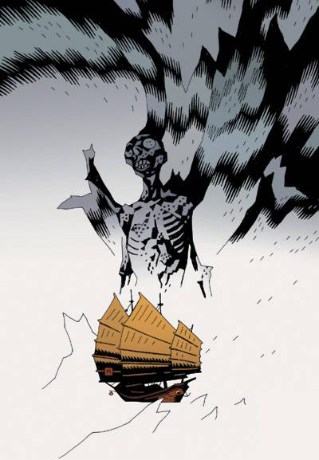
Маккин — выдающийся дизайнер от рисования и король смешанных техник:
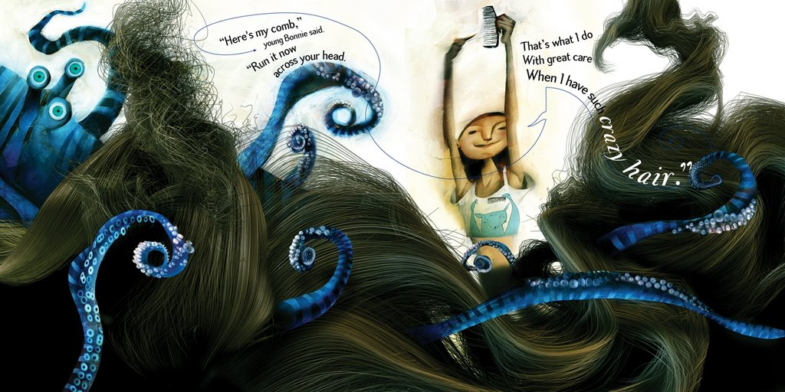
но вот Маттотти — это, в общем, как бы это сказать. Даже не знаю, как и сказать. Я сегодня выступаю в жанре «натянул рубашку на голову и мычит». Что по цвету, что по пластике, какую позицию ни возьми — как говорят в Воронеже, я лучше не видал.
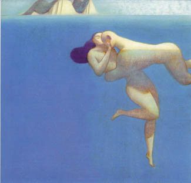
Не верьте благостным картинкам на сайте — комиксы намного жестче и острее. Местами там такой эротический накал — чтобы так рисовать, нужно питаться гематогеном из крови девственниц.
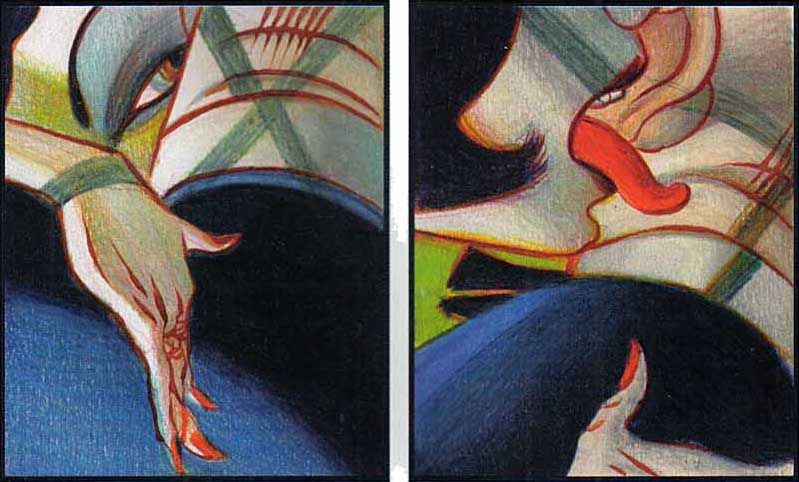
Тут, как говорится по другому поводу у Сэлинджера, самым правильным будет просто вывесить все его работы, что я и сделаю. Смотрите сами, тут все, что нашлось в сети, архивы номер 1 и 2, всего на 180 мегабайт. Надеюсь мне простят этот акт пиратства — тот, кто понимает, не упустит потом случая купить, правда же.
Там довольно мощная подборка иллюстраций
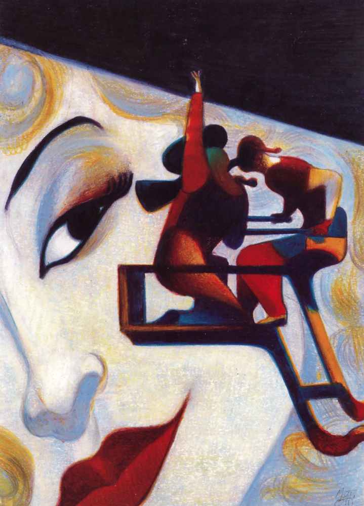
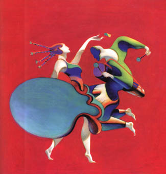
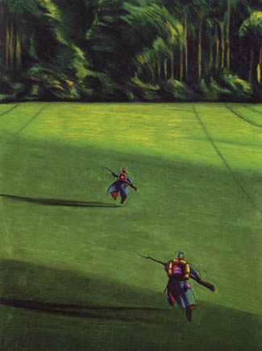
— детских иллюстраций
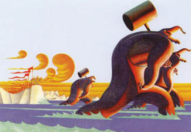
— и живописи:
Но главное это сами комиксы:
Огни (1986)
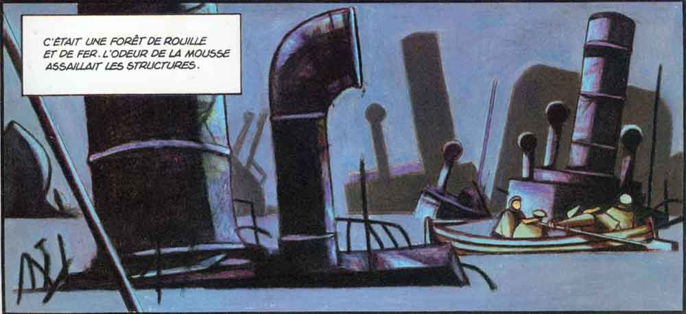
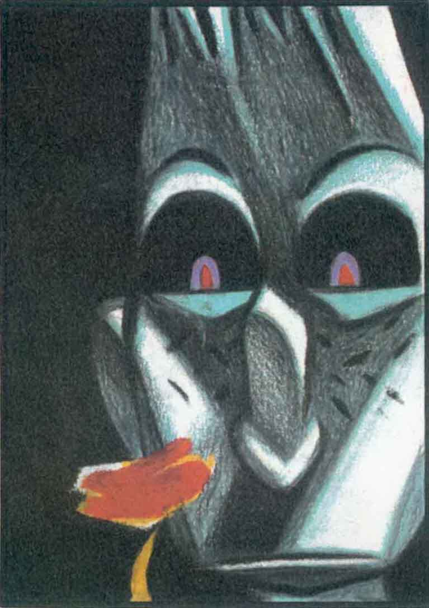
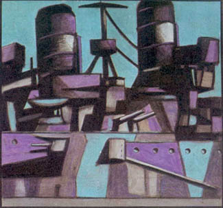
Кстати, вот здесь — интересное про корабельный камуфляж
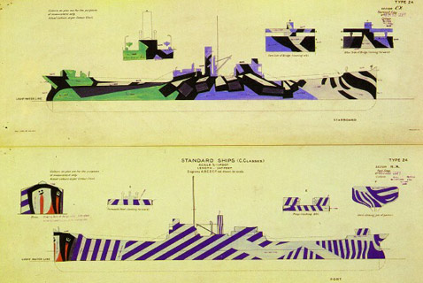
Шепот (1989)
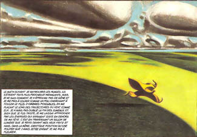
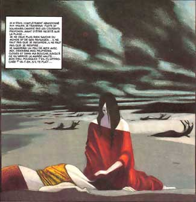
Кабото (1992) — про мореплавателя Джованни Кабото
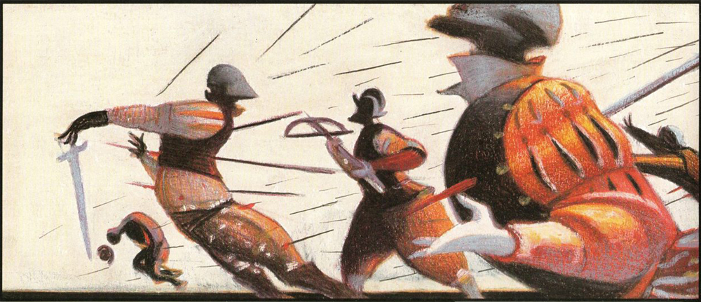
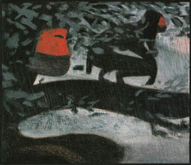
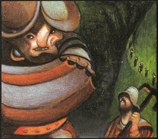
Стигматы (1998)
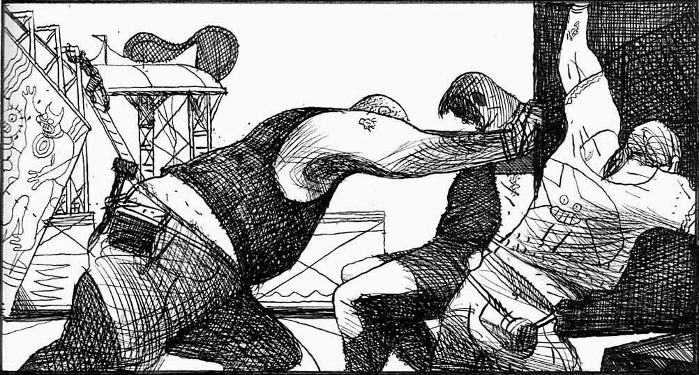
Доктор Джекилл и Мистер Хайд (2002) — Ради этой мне пришлось обвалить на себя стену книжек в комиксном подвале на улице святого Марка в Нью-Йорке. Она была в самом низу. Хозяйке на заметку: все самое интересное всегда в отделе «эротика и иностранные».
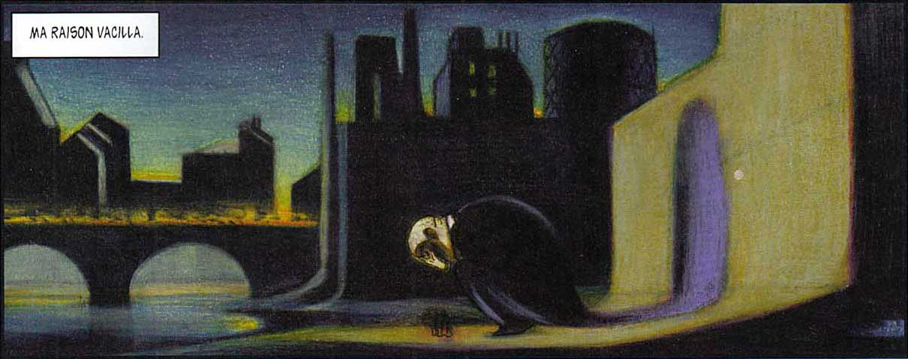
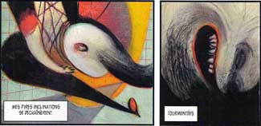
Тут он, надо заметить, кроме Мунка он делает явные реверансы Френсису Бейкону), который мне представляется довольно важной фигурой для современной иллюстрации — но о нем в свой срок.
Фресис Бейкон, "Хенриэтта Моралес смеется", 1969
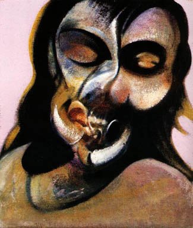
Шорох инея (2003)
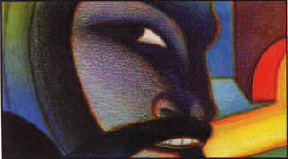
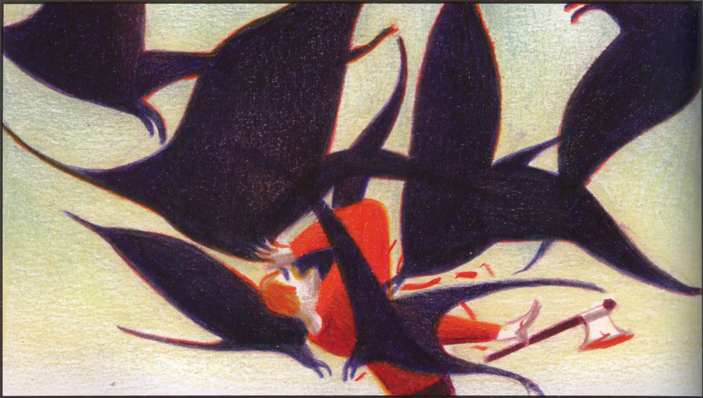
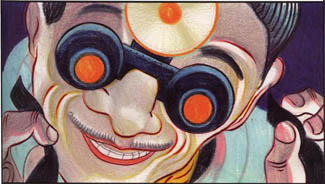
И еще (раз уж взялся пропагандировать пиратство) вот здесь можно скачать анимационный альманах «Страх темноты» (может, кто видел, в кинотеатре 35 миллиметров шел не так давно), там одна из новеллл сделана Маттотти, и я вам скажу, когда оно шевелится — далее нрзб.
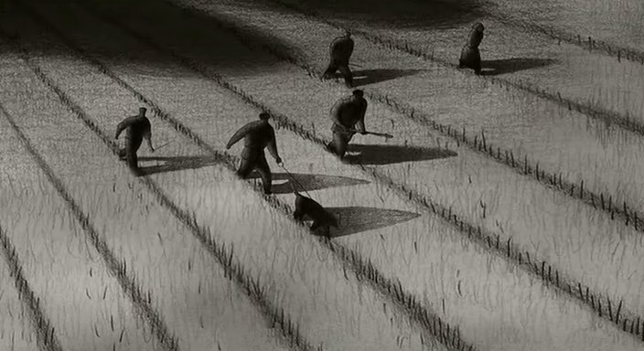
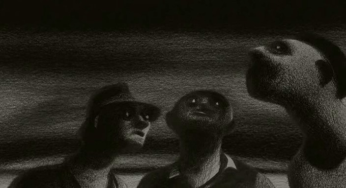